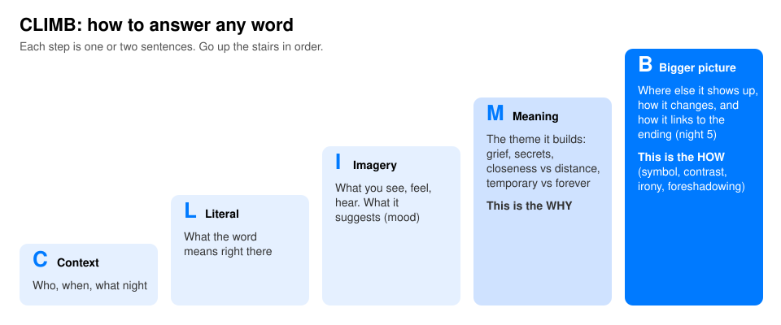

ATM mock test
The real quiz gives you one word and a quote, and you explain why and how the word and its imagery matter. Get a random word, write your answer, then check it against the model.

The prompt is always: explain why and how the word and imagery are significant to "A Temporary Matter." It's one written answer, no multiple choice. Write one strong paragraph, about 5 to 7 sentences.
- Context. When it happens and who's there. "On night 2, while Shoba does the dishes..."
- Literal. What the word means right there. "Literally, the window is just reflecting them."
- Imagery. What you'd see or feel, and the mood. "The picture of them side by side makes them look like a couple again."
- Meaning, the why. The theme. Pick one: grief and loss, secrets and honesty, closeness vs distance, temporary vs permanent.
- Bigger picture, the how. The technique (symbol, motif, contrast, irony, foreshadowing) and a link to the ending on night 5.
If you blank on a word: every word fits light and dark (honesty only in the dark), home and food (a home built for a family that never came), or secrets and the end (the truth brings them close, then breaks them). Find the group, use its theme, link it to night 5.